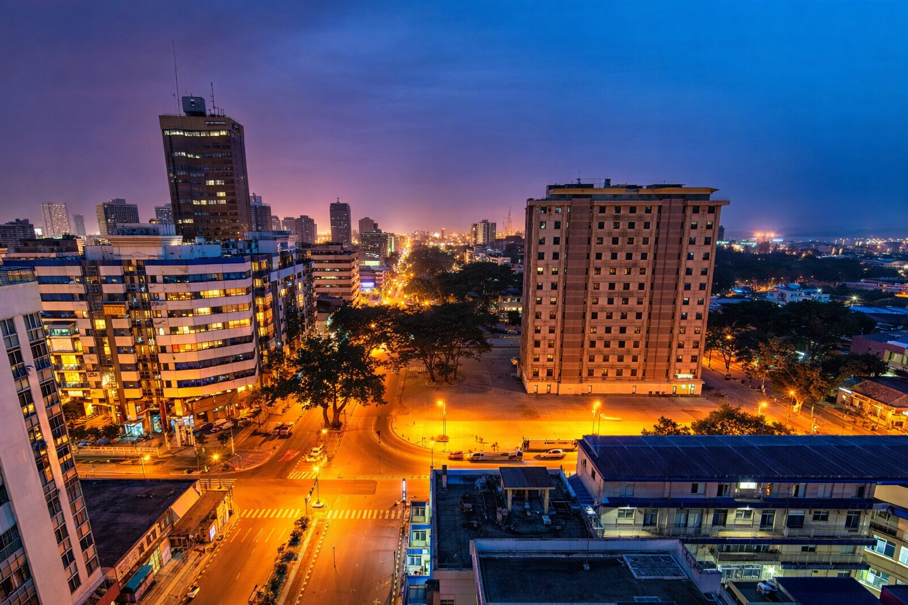

Yamoussoukro
18.5k
Basilique Notre-Dame
La plus grande église du monde

RetourÉlégance lagunaire, puissance économique et traditions millénaires
La Côte d'Ivoire est une mosaïque de paysages et de peuples. Entre le dynamisme futuriste d'Abidjan, la démesure spirituelle de Yamoussoukro, l'histoire coloniale de Grand-Bassam et la nature sauvage des parcs nationaux, le pays offre une expérience africaine complète. Terre de cacao et de joie de vivre, la Côte d'Ivoire vous accueille à bras ouverts.
Découvrez les 15 sites emblématiques de la Côte d'Ivoire
La plus grande église du monde

Patrimoine Mondial de l'UNESCO

Le "Manhattan" de l'Afrique de l'Ouest

Plages paradisiaques et lagunes

Forêt primaire et chimpanzés

La cité des 18 montagnes

Bord de mer sauvage et authentique

Plus grand parc national du pays

Tissages, perles et danses sacrées
Panorama unique sur les montagnes

Architecture audacieuse au Plateau
L'évasion à deux pas d'Abidjan
Biodiversité africaine protégée

Ecotourisme et détente au naturel
Détente entre lagune et océan
La terre des 60 ethnies et du Zouglou.
La Côte d'Ivoire est un carrefour culturel vibrant où les traditions des peuples Akan, Krou, Mandé et Gour se mêlent harmonieusement. Son histoire est celle d'une nation qui a su bâtir une modernité sans renier ses racines. Berceau du Coupé-Décalé et du Zouglou, le pays vibre au rythme d'une créativité débordante qui influence tout le continent.
La richesse des traditions royales et l'importance de l'or dans la culture et les cérémonies.
Du Ziglibithy au Zouglou, la musique est l'expression de la joie et de la résilience ivoirienne.
Les tissages Korhogo et les masques Sénoufo témoignent d'une spiritualité profonde.
L'architecture coloniale du Quartier France, témoin de la première capitale ivoirienne.

Ramenez l'excellence ivoirienne. Des produits d'exception issus de nos terroirs et de nos ateliers.
 En stock
En stock
Fabriqué avec les fèves de cacao les plus fines du monde, récoltées localement.
 En stock
En stock
Tissu traditionnel tissé à la main, symbole de noblesse et de prestige.
 En stock
En stock
Sculpture protectrice en bois noble, pièce maîtresse de l'art du nord.
Masque facial sculpté avec finesse, emblème de la sagesse forestière.
Soin naturel millénaire pour la peau et les cheveux, 100% biologique.

Cocody, Abidjan

Plateau, Abidjan

Plateau, Abidjan

Plateau, Abidjan

Marcory, Abidjan

Port-Bouët, Abidjan
La cuisine ivoirienne est l'une des plus riches du continent. Colorée, épicée et variée, elle met à l'honneur les produits locaux comme le manioc, la banane et le poisson frais.

Semoule de manioc fermentée servie avec poisson grillé.

Le plat de rue favori à base de thon frit et d'attiéké.
Rondelles de bananes plantains frites, servies avec du piment.
Ragoût de poulet cuit à l'étouffée avec des légumes.
Boule de banane et manioc pilés, servie avec une sauce graine.
Onctueuse sauce à base de pulpe de noix de palme.
Pâte de manioc fermentée servie avec une sauce gombo ou graine.
Escargots de forêt préparés dans une sauce épicée.
Ragoût de viande et de chou très populaire à Abidjan.
Boisson rafraîchissante à base de fleurs d'hibiscus.
Puissant jus de gingembre frais, tonifiant et piquant.
Vin de palme naturel, boisson traditionnelle de fête.
Vivez l'ambiance unique des festivals ivoiriens entre tradition et modernité.
Grand festival culturel du peuple N'Zima à Grand-Bassam.
Festival des Musiques Urbaines d'Anoumabo porté par Magic System.
Le rendez-vous glamour de la haute couture ivoirienne et africaine.
C'est la grande saison sèche, idéale pour profiter des plages d'Assinie et visiter les parcs nationaux. Le ciel est souvent dégagé.
Les pluies sont fréquentes mais la nature est magnifique. C'est la période idéale pour voir les cascades de Man au maximum de leur débit.
Le pays est stable. Restez prudent à Abidjan la nuit comme dans toute grande métropole mondiale.
Vaccin Fièvre Jaune obligatoire. Traitement antipaludéen recommandé. Eau minérale vivement conseillée.
Le Français est la langue officielle. Le Nouchi (argot local) est très utilisé à Abidjan.
Prises de type C/E (standard français, 220V). Le réseau électrique est le plus performant de la région.
Expert Abidjan & Lagunes
Koffi vous fera découvrir les recoins secrets d'Abidjan, des marchés colorés aux plus beaux toits-terrasses.
Spécialiste Nature & Man
Originaire de l'ouest, Awa vous guidera sur les ponts de lianes et au sommet des montagnes sacrées de Man.
Guide Culture & Nord
Expert des traditions Sénoufo, Drissa vous ouvrira les portes des villages d'artisans de Korhogo.